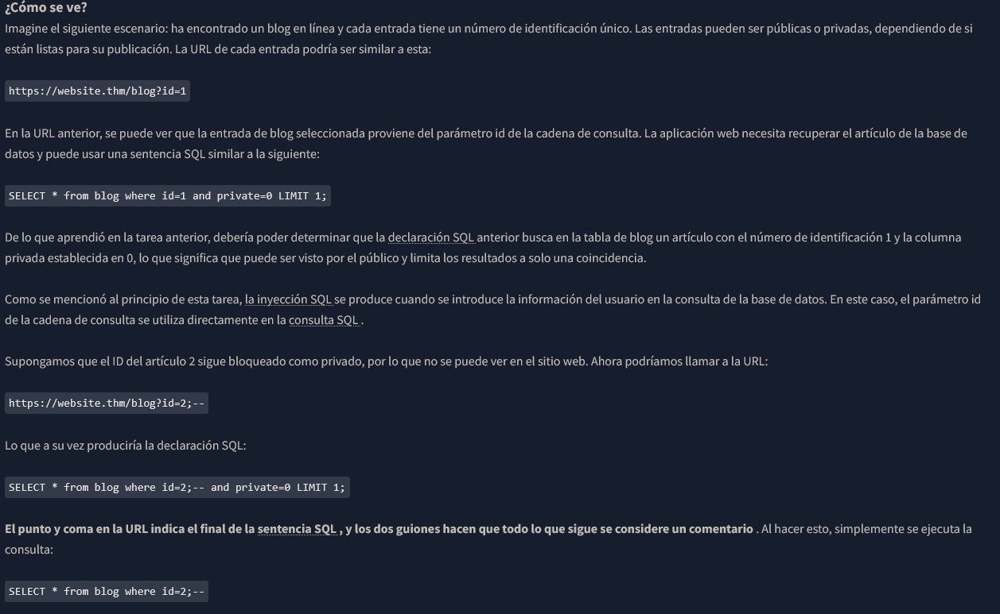
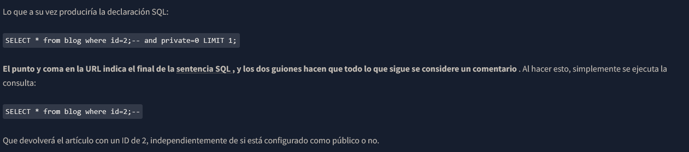
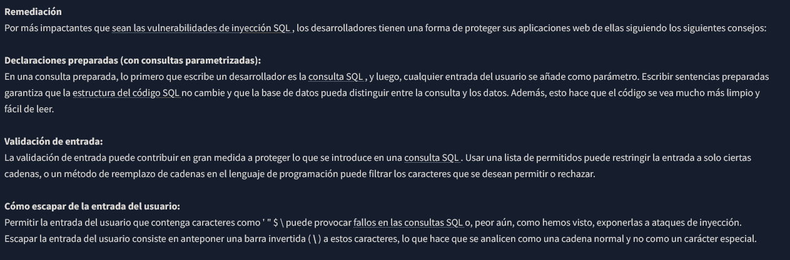

SQL Injection
Devuelve la primera fila = SELECT * FROM users LIMIT 1;
Devuelve la Tercera fila = SELECT * FROM users LIMIT 2,1;
El uso de la cláusula LIKE le permite especificar datos que no son una coincidencia exacta sino que comienzan, contienen o terminan con ciertos caracteres eligiendo dónde colocar el carácter comodín representado por un signo de
porcentaje %.
SELECT * FROM users WHERE username LIKE 'a%';
SELECT * FROM users WHERE username LIKE '%mi%';
SELECT * FROM users WHERE username LIKE 'a_min';
CONSULTA UNION = SELECT * FROM customers UNION SELECT * FROM suppliers;
UPDATE users SET username='root', pass='132' WHERE username='admin'
DELETE FROM users WHERE username ='martin';
SQL Injection
Cuando los datos proporcionados por el usuarios se incluyen en una consulta SQL


--*-*-*-*-*--*-*-*-*-*--*-*-*-*-*--*-*-*-*-*--*-*-*-*-*--*-*-*-*-*--*-*-*-*-*--*-*-*-*-*--*-*-*-*-*--*-*-*-*-*--*-*-*-*-*--*-*-*-*-*--*-*-*-*-*--*-*-*-*-*--*-*-*-*-*--*-*-*-*-*--*-*-*-*-*--*-*-*-*-*--*-*-*-*-*
REMEDIATIONS
